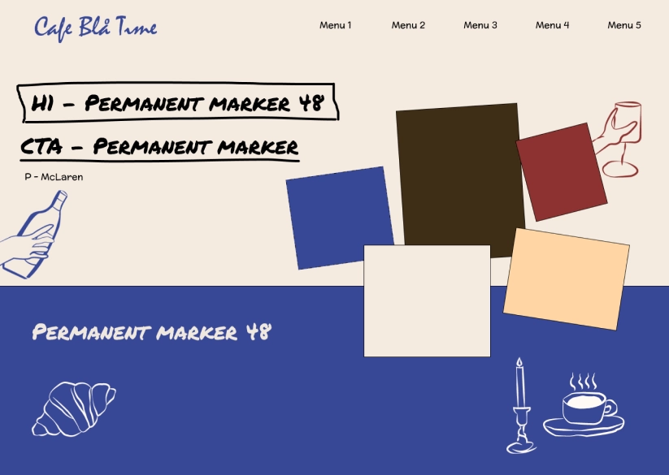
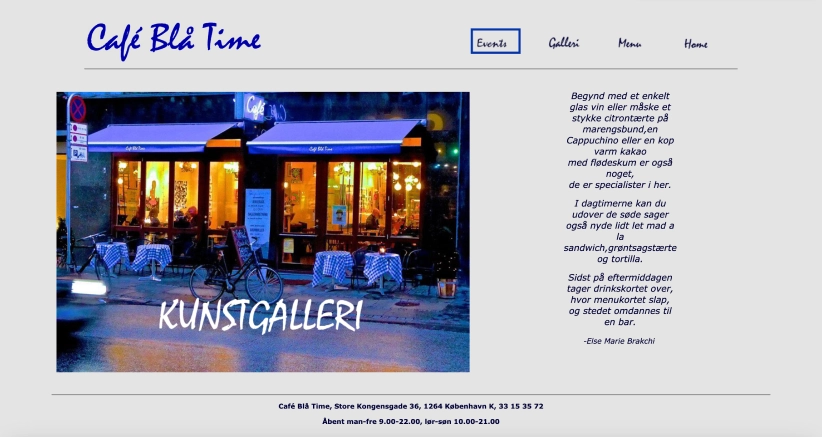
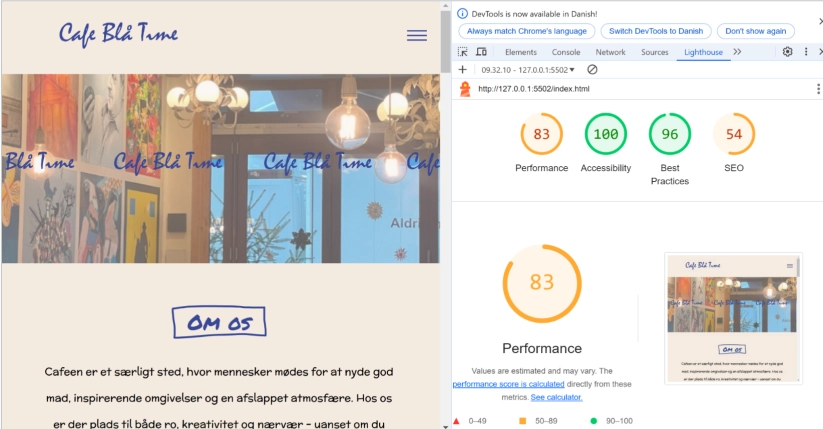

I Tema 5 blev jeg introduceret til indholdsproduktion både individuelt og i grupper. Jeg har arbejdet med videoredigering, Lottiefile og hjemmesidedesign, samt samarbejdsværktøjer som SCRUM, Trelloboard og GitHub. Temaet gav mig også indblik i, hvordan det er at arbejde med en kunde og tilpasse design til en målgruppe.
Som en del af den første opgave i temaet skulle jeg skabe et passionsite med tilhørende 1-minute-wonder-video og LottieFile. Min gruppe og jeg, valgte at tage udgangspunkt i min roomie, Viola, der er passioneret omkring filmproduktion.
Vi optog interviewet med en iPhone og brugte en clip-on mikrofon til at sikre god lydkvalitet. Interviewet blev suppleret med b-rolls, som vi optog i min lejlighed for at skabe en stemning, der passede til historien. I Premiere Pro lærte jeg at synkronisere lyd og video, klippe en fortælling sammen og tilføje stemningsfulde b-roll-klip.
Jeg designede hjemmesiden med udgangspunkt i en udleveret wireframe, hvor jeg har indsat et videotag i min HTML, samt youtube video embed-code. Til hero-sektionen lavede jeg en LottieFile i After Effects. Jeg havde svært ved at finde på en animation, der gav mening ift resten af siden og dens indhold. Efter meget brainstorming og research af andre hjemmesider, fandt jeg frem til en animation, der forestiller en rullende filmrulle, der kastede spotlight på nøgleord relateret til filmproduktion. Dette projekt gav mig grundlæggende erfaring med integration af visuelle og dynamiske elementer på en hjemmeside.
Hovedopgaven i temaet var et redesign af en eksisterende virksomheds hjemmeside i grupper. Min gruppe valgte at arbejde med Café Den Blå Time, som er en hyggelig café i Indre By.
Efter at have valgt caféen, tog vi på besøg for at opleve stemningen, tage billeder og interviewe ejeren. Disse indsigter brugte vi til, hver især, at udvikle et moodboard og en styletile, der afspejlede caféens identitet. Vi blev enige om ét fælles styletile, som vores redesign skulle tage udganspunkt i. Ved hjælp af SCRUM, Trello og GitHub organiserede vi vores arbejdsproces og delt opgaverne op ud fra vores sitemap. Jeg lærte, hvordan man effektivt arbejder i et team og anvender Push og Pull i GitHub.
Caféens oprindelige hjemmeside var kompakt og svær at navigere, især for deres mange ældre stamkunder. Vores redesign fokuserede på større fonte, et mere luftigt layout og visuelle elementer, der afspejlede caféens hyggelige og varme atmosfære. Vi har valgt at fokuserer på at modernisere hjemmesiden en smule, men at beholde stemningen og hyggen fra stedet. Derfor forholder vi os til at den er nem og funktionel så alle kan finde ud af at bruge den, men at gøre den mere ungdommelig/moderne til nutidens hjemmesider - da det tiltrækker flere unge.
For at evaluere redesignets effekt gennemførte vi forskellige tests, herunder 5-sekunders tests, som gav os positiv feedback på sidens overskuelighed. Resultaterne fra testen er baseret på kun fire svar, hvilket ikke er nok til at give et repræsentativt billede af brugeroplevelsen. Men vi har fået flg ud af det:
Lighthouse-testen hjalp os med at identificere tekniske forbedringer, såsom at optimere billeder til WebP-format for at forbedre sidens hastighed.
